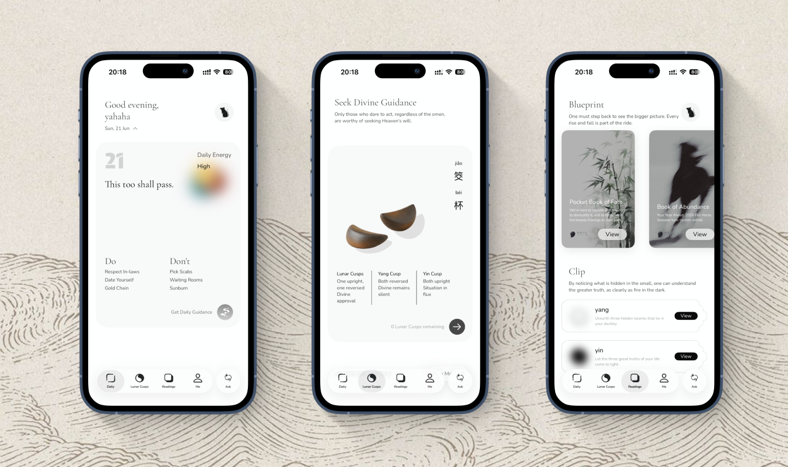
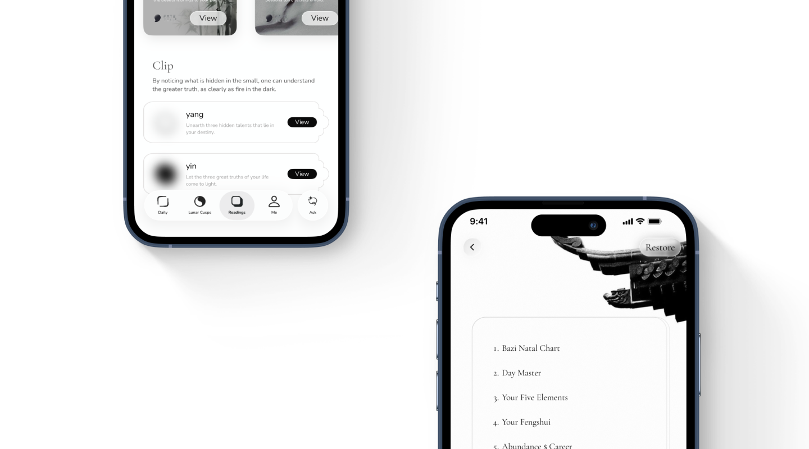

A Chinese astrology app for a global audience. The fortune-telling logic runs on AI; I designed everything you see and feel. Two things drove the work: how to express Eastern aesthetics in a modern, restrained way — and how to make the core ritual, asking the divine, feel physically real on a screen.

Thread One — The aesthetics of emptiness
Not for the wuxia, but for what the film actually pulls off: it's unmistakably Eastern, yet it speaks in fully modern cinematic language. Nothing about it feels like a costume drama or a nostalgia piece. That was the bar I set for FateTell. I didn't want to make a "traditional Chinese style" product — to me that direction always reads as decorative, never quite modern, never quite elevated.
So instead of borrowing Chinese motifs wholesale, I went one level deeper: extract the underlying structure of the aesthetic, then rebuild from there. Lots of negative space. Asymmetry. Textures and woodblock marks that appear as quiet punctuation, tucked into corners — never announcing themselves. The product should feel Chinese in the way a room feels lived-in: you sense it before you can point to why.
The truest quality of Eastern aesthetics is emptiness — and emptiness can only be expressed through space.
This is the decision I'm most proud of, because it didn't stay visual. If emptiness is the point, then the interface itself has to breathe — which meant I couldn't pile features onto one busy home screen the way most apps in this category do. I split the product across five distinct tabs, each given room to exist on its own. The whitespace isn't just how it looks; it's how it's structured. I was willing to trade home-screen density — and the conversion bump that usually comes with it — to protect the space. That trade-off is the aesthetic, made operational.

The report card's edge borrows the silhouette of a traditional Chinese lattice window. If you don't know the reference, it just reads as a card with an unusual, pleasing shape. If you do, it's a small signal that someone was paying attention. That's the level I wanted these details to live at — felt, not displayed.
Thread Two — Making a ritual feel real
Lunar Cusps is FateTell's take on a Chinese folk ritual: when you have a question for the divine, you toss a pair of crescent-shaped wooden blocks and read how they land — one up, one down means yes; both flat means the gods are laughing; both round means no. I wanted this moment to feel like the real thing, not a button that returns a result. If it's going to be a ritual, the body has to be involved.
So the throw is a press-and-hold to build intention, then release to cast. You feel the charge before you let go. The blocks are dropped through a real physics engine — they actually tumble and settle, so the outcome is genuinely random, never a pre-baked animation. The instant they land, haptics fire and a wooden clack plays. For a moment, a glass screen has the weight of two pieces of carved wood.
Press to build intention, release to cast. Physics-driven, with haptics and a wooden clack on landing — so the answer feels earned, not generated.
This wasn't only about delight. The press-charge-release loop, the randomness, the sound and touch — together they create the feeling of actually asking, which is exactly what the practice is about. That sense of genuine ritual is why Lunar Cusps became the centerpiece of our Taiwan and Hong Kong campaigns: in markets where asking the divine is a living habit, this interaction landed as the real thing, not a gimmick. The design judgment and the market judgment turned out to be the same one.
"It might still have a few bugs, but the mechanisms are so fun and well thought out. I love the haptic feedback — it helps me feel connected rather than interacting with a lifeless screen."
— App Store review, United States"Hands down the most visually stunning astrology product I've used in ages — the mystical Eastern aesthetics and Chinese elements are just breathtaking."
— App Store review, United StatesSolo
Entire visual system & IA, 0 → 1
4.8★
App Store rating
Global
Users across TW · CN · US